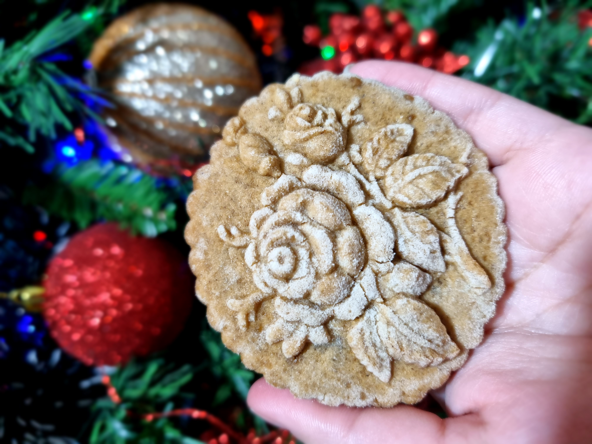
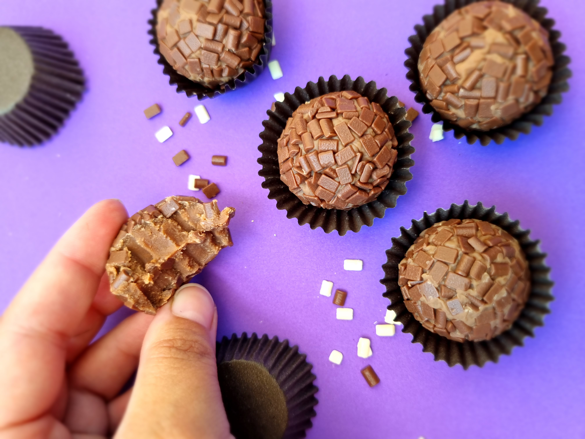
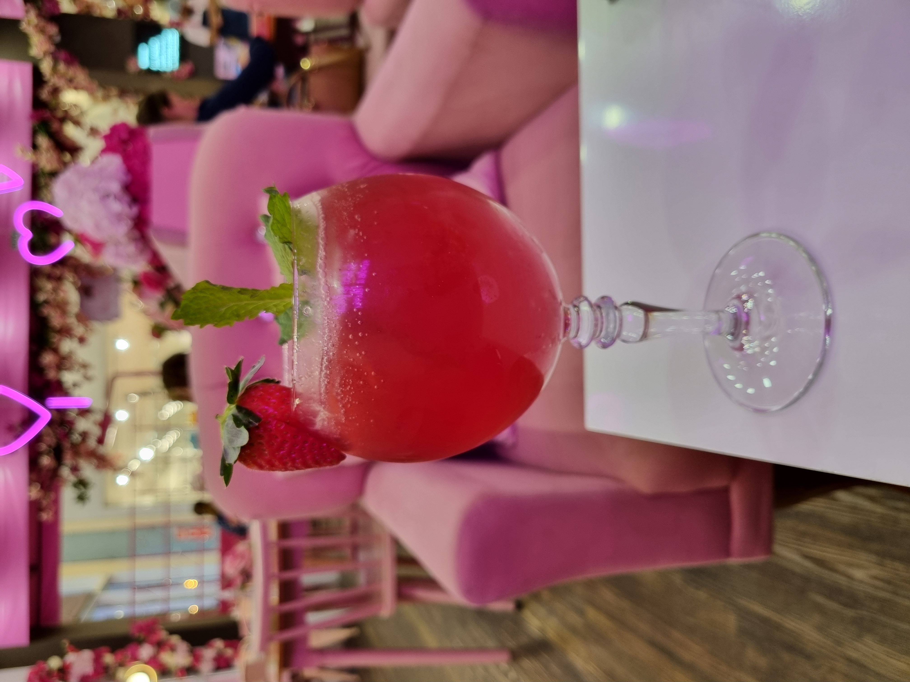

<!-- Estudando Bootstrap - Cards (tema livre) -->

!<DOCTYPE html>
<html lang="pt-BR">
<head>
    <meta charset="UTF-8">
    <meta http-equiv="X-UA-Compatible" content="IE=edge">
    <meta name="viewport" content="width=device-width, initial-scale=1.0">
    <link rel="stylesheet" href="https://stackpath.bootstrapcdn.com/bootstrap/4.1.3/css/bootstrap.min.css" integrity="sha384-MCw98/SFnGE8fJT3GXwEOngsV7Zt27NXFoaoApmYm81iuXoPkFOJwJ8ERdknLPMO" crossorigin="anonymous">
    <link rel="stylesheet" type="text/css" href="cards.css">
    <title>Trabalhando com Bootstrap</title>
</head>
<html>
    <style> h1 { text-align: center; color: rgb(75, 19, 128);}</style>
    <h1> Trabalhando com Bootstrap - Comidinhas</h1> <br>

    <div class="container">
        <div class="row">
                <div class="card" col=bg-danger style="width: 18rem;">
                
                <div class="card-body">
                  <p class="card-text">Biscoitos com gosto de felicidade</p><br>
                  <button type="button" class="btn btn-outline-primary" data-bs-toggle="botao" data-bs-target="">Manda pra cá</button>
                </div>
                </div>
              

              <div class="card" style="width: 18rem;">
                
                <div class="card-body">
                  <p class="card-text">Brigadeiro para a TPM</p><br>
                  <button type="button" class="btn btn-outline-primary" data-bs-toggle="botao" data-bs-target="">TPM mode ON</button>
                </div>
              </div>

              <div class="card" style="width: 18rem;">
                
                <div class="card-body">
                  <p class="card-text">It's Five O'Clock Somewhere</p><br>
                  <button type="button" class="btn btn-outline-primary" data-bs-toggle="botao" data-bs-target="">Ser Feliz</button>
                </div>
              </div>
            </div>
              


               


    </div>
</div>  
</div>
    <script src="https://cdn.jsdelivr.net/npm/bootstrap@5.2.0-beta1/dist/js/bootstrap.bundle.min.js" integrity="sha384-pprn3073KE6tl6bjs2QrFaJGz5/SUsLqktiwsUTF55Jfv3qYSDhgCecCxMW52nD2" crossorigin="anonymous"></script>
</body>
</html>